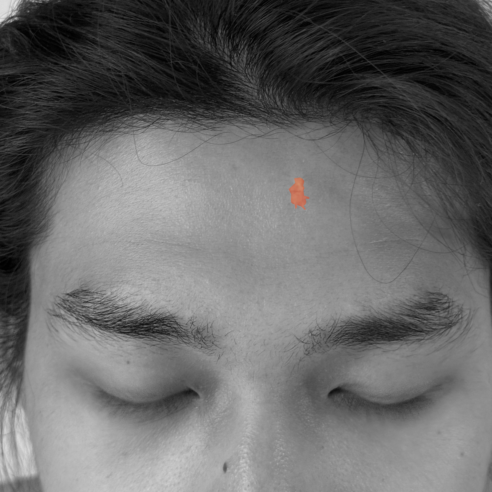
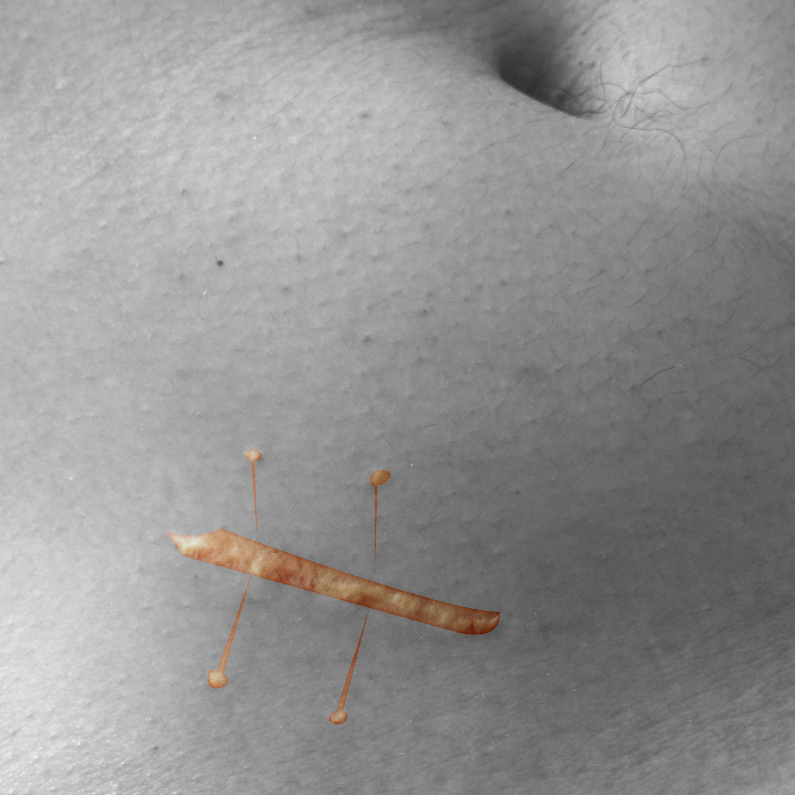
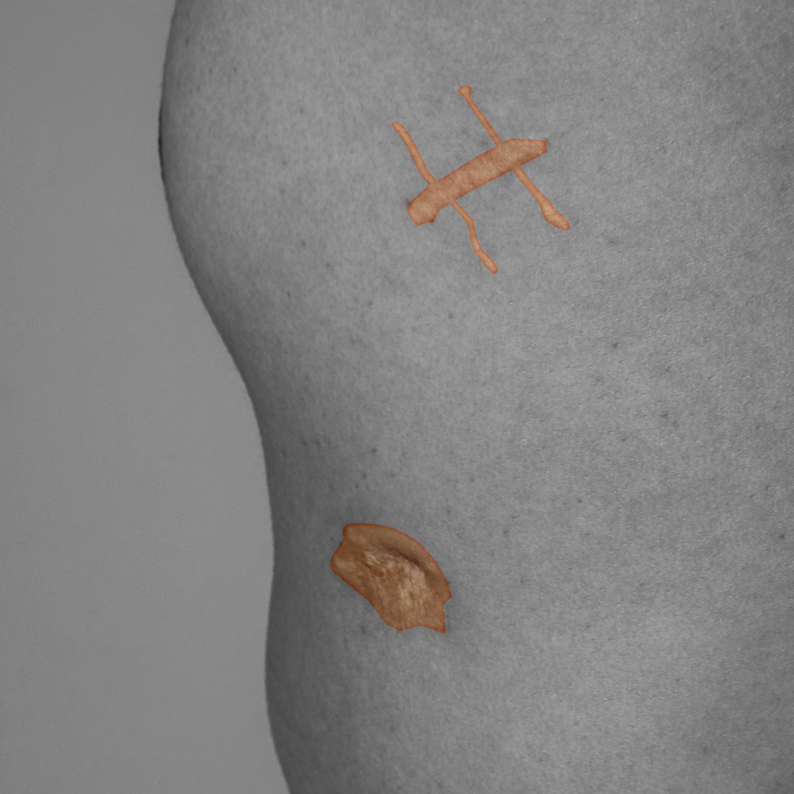
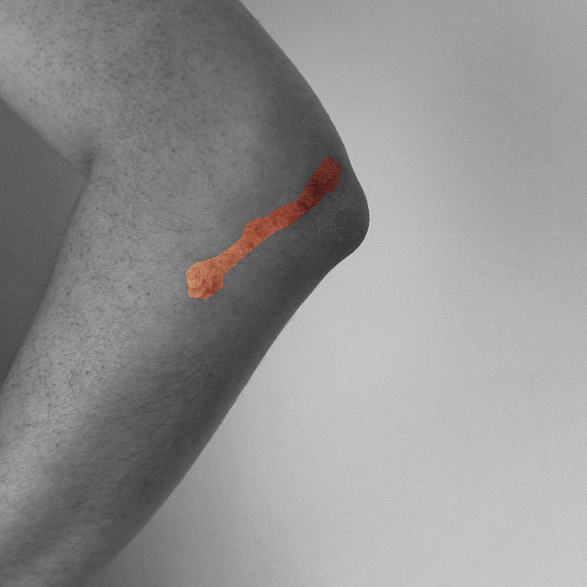
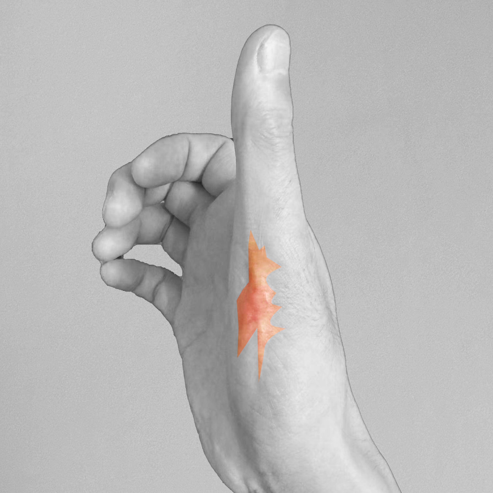
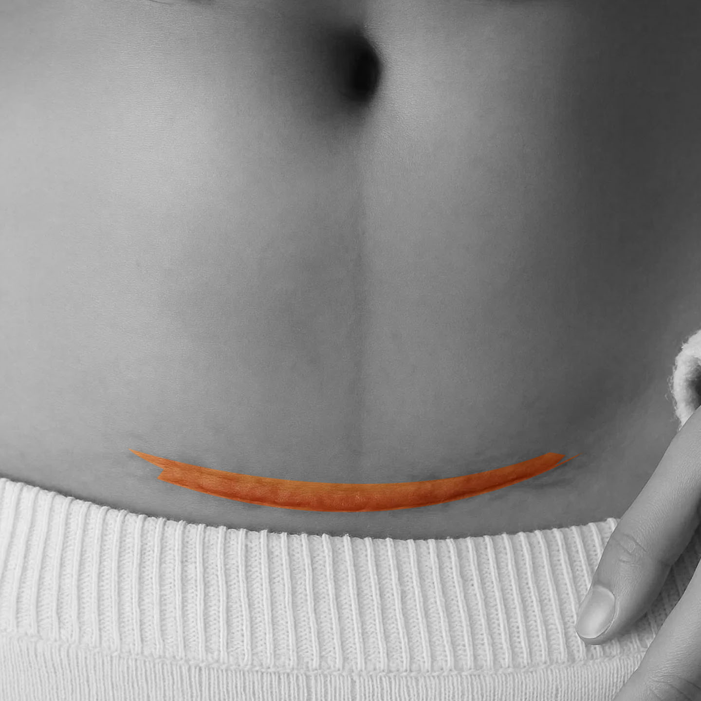
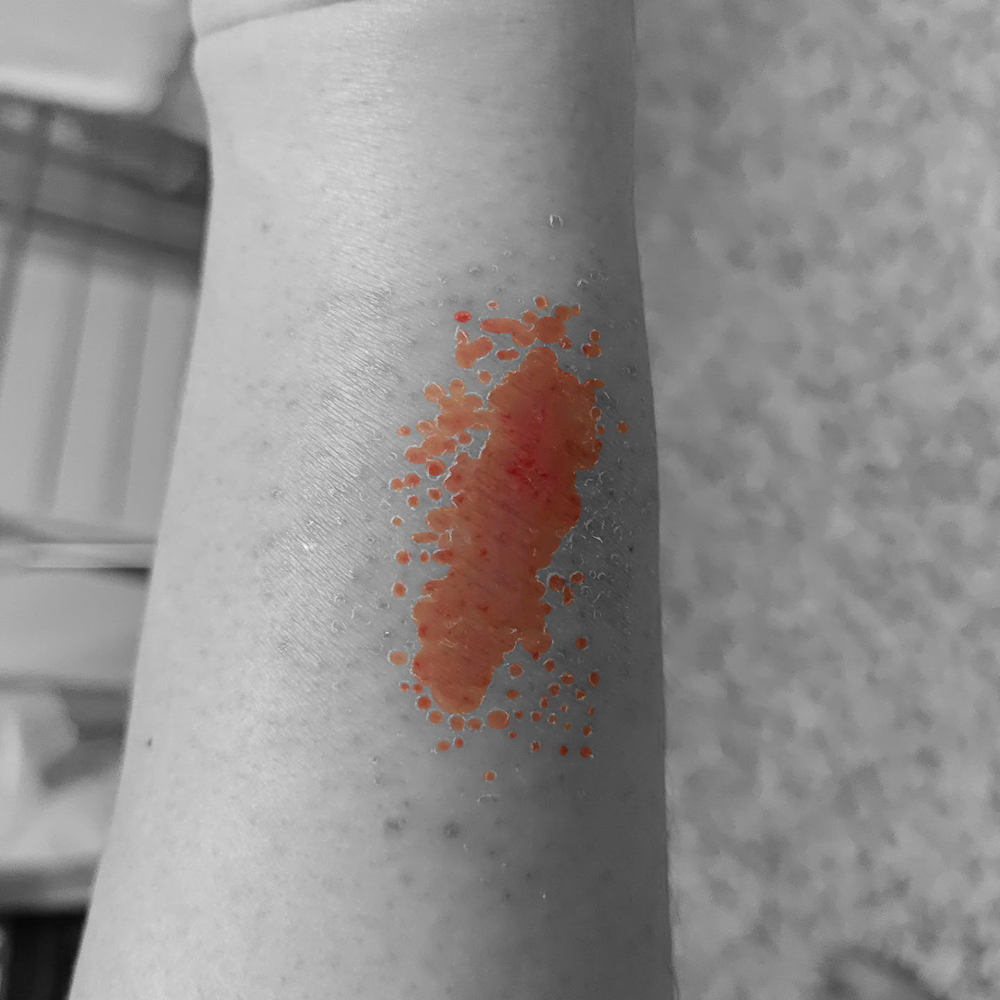

About
About This Website
Our Mission
Welcome to Ahia, a digital archive dedicated to preserving scars. Below, you can contact us to share your photos and stories—whether your scars are physical or emotional.
Every scar carries a story. Some speak of pain, others of healing—together, they shape who we are. This website aims to transform fear into empathy, revealing the beauty that can emerge from our wounds.
Events
Upcoming Events
Past Events
Contact
Email: ahia1cicatrice@gmail.com
Instagram
Where Scars Remember






